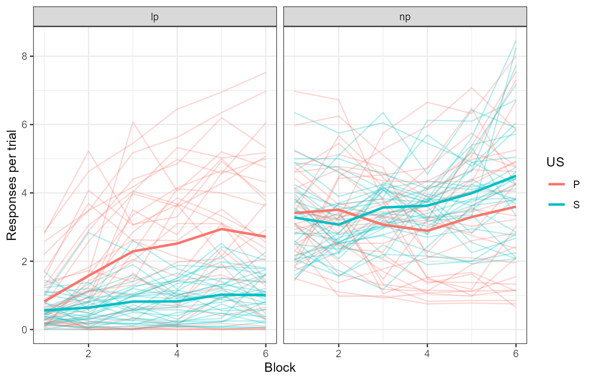

Fitting HeiDI to empirical data
In this demo, I fit HeiDI to some empirical data (Patitucci et al., 2016, Experiment 1). This will involve writing a function that produces model responses organized as the empirical data, so we can use that function for maximum likelihood estimation (MLE). We begin with a short overview of the data, then move to the model function, and finally the fit.
The data
The data (pati) contains the responses (lever presses or
lp, and nose pokes or np) for 32 rats, across 6 blocks of training (2
sessions per block). The animals were trained to associate two levers to
two different food rewards (pellets or sucrose).
Let’s have a glance.
summary(pati)
#> subject block lever us response
#> 1 : 24 Min. :1.0 B: 0 Length:768 lp:384
#> 2 : 24 1st Qu.:2.0 L:384 Class :character np:384
#> 3 : 24 Median :3.5 R:384 Mode :character
#> 4 : 24 Mean :3.5
#> 5 : 24 3rd Qu.:5.0
#> 6 : 24 Max. :6.0
#> (Other):624
#> rpert
#> Min. :0.0000
#> 1st Qu.:0.9437
#> Median :2.2500
#> Mean :2.4806
#> 3rd Qu.:3.8000
#> Max. :8.4500
#>
pati |> ggplot(aes(x = block, y = rpert, colour = us)) +
geom_line(aes(group = interaction(us, subject)), alpha = .3) +
stat_summary(geom = "line", fun = "mean", linewidth = 1) +
labs(x = "Block", y = "Responses per trial", colour = "US") +
facet_grid(~response)
The thicker lines are group averages; the rest are individual subjects. We ignore the specific mapping between levers and USs here because that was counterbalanced across subjects. However, we will not ignore the counterbalancing when writing the model function (see ahead).
Writing the model function
The biggest hurdle in fitting the model to empirical data is to write a function that, given a vector of parameters and an experiment, generates responses that are organized as the empirical data. Let’s begin by summarizing the data first, so we know what to aim for.
pati_summ <- setDT(pati)[,
list("rpert" = mean(rpert)),
by = "block,us,response"
]
# set order (relevant for the future)
setorder(pati_summ, block, response, us)
head(pati_summ)
#> block us response rpert
#> 1: 1 P lp 0.8195313
#> 2: 1 S lp 0.5609375
#> 3: 1 P np 3.4109375
#> 4: 1 S np 3.2796875
#> 5: 2 P lp 1.5738281
#> 6: 2 S lp 0.6406250So what do we have to design? The experiment presented by Patitucci et al. (2016) was fairly simple, and it can be reduced to the presentations of two levers, each followed by a different appetitive outcome. Here, we will assume that the two outcomes are independent from each other. We will also take some liberties with the number of trials we specify to reduce computing time.
But beware: HeiDI, like many learning models, is sensitive to order effects. We do not want the model to misfit the data because we happened to run our simulations with an unlucky run of trials. The arguments we prepare must reflect the behavior of the model after a “general” experimental procedure, and so, we address that issue by running several iterations of the experiment (each with random order of trials) and averaging all experiments before evaluating the likelihood of the parameters.
With that in mind, we now will prepare the experiment as you would
pass to run_experiment().
# The design data.frame
des_df <- data.frame(
group = c("CB1", "CB2"),
training = c(
"12L>(Pellet)/12R>(Sucrose)",
"12L>(Sucrose)/12R>(Pellet)"
),
rand_train = FALSE
)
# The parameters
# the actual parameter values don't matter,
# as our function will re-write them inside the optimizer call
parameters <- get_parameters(des_df,
model = "HD2022"
)
# The arguments
experiment <- make_experiment(des_df,
parameters = parameters, model = "HD2022",
iterations = 4
)
experimentNote we specified two counterbalancings as groups.
We must reproduce the counterbalancings in the data we are trying to
fit as close as possible. Otherwise, the optimization process might
latch onto experimentally-irrelevant variables. For example, it can be
seen in pati that there was more lever pressing whenever a
lever was paired with pellets. If we didn’t counterbalance the
identities of the levers and food rewards, the optimization might result
in one of the levers being less salient than the other!
We can now begin to write the model function. First, it would be a
good to see what results run_experiment() returns.
exp_res <- run_experiment(experiment)
results(exp_res)
#> $as
#> group phase trial_type trial s1 block_size value model
#> 1: CB1 training L>(Pellet) 1 L 2 0.4 HD2022
#> 2: CB1 training R>(Sucrose) 2 L 2 0.0 HD2022
#> 3: CB1 training L>(Pellet) 3 L 2 0.4 HD2022
#> 4: CB1 training R>(Sucrose) 4 L 2 0.0 HD2022
#> 5: CB1 training L>(Pellet) 5 L 2 0.4 HD2022
#> ---
#> 188: CB2 training R>(Pellet) 20 Sucrose 2 0.0 HD2022
#> 189: CB2 training L>(Sucrose) 21 Sucrose 2 0.4 HD2022
#> 190: CB2 training R>(Pellet) 22 Sucrose 2 0.0 HD2022
#> 191: CB2 training L>(Sucrose) 23 Sucrose 2 0.4 HD2022
#> 192: CB2 training R>(Pellet) 24 Sucrose 2 0.0 HD2022
#>
#> $heidi_acts
#> group phase trial_type trial s1 s2 block_size type value
#> 1: CB1 training L>(Pellet) 1 LPellet L 2 combvs 0
#> 2: CB1 training L>(Pellet) 1 LPellet Pellet 2 combvs 0
#> 3: CB1 training L>(Pellet) 1 LPellet R 2 combvs 0
#> 4: CB1 training L>(Pellet) 1 LPellet Sucrose 2 combvs 0
#> 5: CB1 training R>(Sucrose) 2 LPellet L 2 combvs 0
#> ---
#> 572: CB2 training R>(Pellet) 24 L Sucrose 2 chainvs 0
#> 573: CB2 training R>(Pellet) 24 Sucrose L 2 chainvs 0
#> 574: CB2 training R>(Pellet) 24 Sucrose Pellet 2 chainvs 0
#> 575: CB2 training R>(Pellet) 24 Sucrose R 2 chainvs 0
#> 576: CB2 training R>(Pellet) 24 Sucrose Sucrose 2 chainvs 0
#> model
#> 1: HD2022
#> 2: HD2022
#> 3: HD2022
#> 4: HD2022
#> 5: HD2022
#> ---
#> 572: HD2022
#> 573: HD2022
#> 574: HD2022
#> 575: HD2022
#> 576: HD2022
#>
#> $rs
#> group phase trial_type trial s1 s2 block_size value model
#> 1: CB1 training L>(Pellet) 1 L L 2 0 HD2022
#> 2: CB1 training L>(Pellet) 1 L Pellet 2 0 HD2022
#> 3: CB1 training L>(Pellet) 1 L R 2 0 HD2022
#> 4: CB1 training L>(Pellet) 1 L Sucrose 2 0 HD2022
#> 5: CB1 training L>(Pellet) 1 Pellet L 2 0 HD2022
#> ---
#> 764: CB2 training R>(Pellet) 24 R Sucrose 2 0 HD2022
#> 765: CB2 training R>(Pellet) 24 Sucrose L 2 0 HD2022
#> 766: CB2 training R>(Pellet) 24 Sucrose Pellet 2 0 HD2022
#> 767: CB2 training R>(Pellet) 24 Sucrose R 2 0 HD2022
#> 768: CB2 training R>(Pellet) 24 Sucrose Sucrose 2 0 HD2022
#>
#> $vs
#> group phase trial_type trial s1 s2 block_size value
#> 1: CB1 training L>(Pellet) 1 L L 2 0.0000000
#> 2: CB1 training L>(Pellet) 1 L Pellet 2 0.0000000
#> 3: CB1 training L>(Pellet) 1 L R 2 0.0000000
#> 4: CB1 training L>(Pellet) 1 L Sucrose 2 0.0000000
#> 5: CB1 training L>(Pellet) 1 Pellet L 2 0.0000000
#> ---
#> 764: CB2 training R>(Pellet) 24 R Sucrose 2 0.0000000
#> 765: CB2 training R>(Pellet) 24 Sucrose L 2 0.3991293
#> 766: CB2 training R>(Pellet) 24 Sucrose Pellet 2 0.0000000
#> 767: CB2 training R>(Pellet) 24 Sucrose R 2 0.0000000
#> 768: CB2 training R>(Pellet) 24 Sucrose Sucrose 2 0.0000000
#> model
#> 1: HD2022
#> 2: HD2022
#> 3: HD2022
#> 4: HD2022
#> 5: HD2022
#> ---
#> 764: HD2022
#> 765: HD2022
#> 766: HD2022
#> 767: HD2022
#> 768: HD2022Although results() returns many model outputs, as I said
earlier, we only care about one of them: rs (the model
responses). With them, we can write our model function.
my_model_function <- function(pars, exper, full = FALSE) {
# extract the parameters from the model
new_parameters <- parameters(exper)[[1]]
# assign alphas
new_parameters$alphas[] <- pars
# reassign parameters to the experiment
parameters(exper) <- new_parameters # note parameters method
# running the model and selecting rs
exp_res <- run_experiment(exper)
# summarizing the model
rs <- results(exp_res)$rs
# calculate extra variables
rs$response <- ifelse(rs$s1 %in% c("Pellet", "Sucrose"), "np", "lp")
rs$block <- ceiling(rs$trial / 4)
# filtering
rs <- rs[s2 %in% c("Pellet", "Sucrose") &
(response == "np" | (response == "lp" &
mapply(grepl, s1, trial_type)))]
rs <- rs[, list(value = mean(value)), by = "block,s2,response"]
if (full) {
return(rs)
}
rs$value
}Let’s dissect the function above in its three parts.
We get the parameters from the experiment, via the
parameters()method and store them innew_parameters.1We put
pars(the parameters provided by the optimizer) into thealphasofnew_parameters.We run the experiment and store it in
exp_res.We select the model responses (
rs) from the model results and store them inrs.Lastly. We summarise the model responses and return them.2
That’s a lot to digest, so let’s see the function in action.
my_model_function(c(.1, .2, .4, .3), experiment)
#> [1] 0.008050000 0.010565625 0.002650000 0.005048437 0.031828820 0.042306678
#> [7] 0.010963860 0.021017097 0.044113881 0.058286944 0.016036258 0.030438661
#> [13] 0.050783660 0.066233126 0.019358818 0.036222556 0.054742035 0.070502134
#> [19] 0.021701424 0.040091950 0.057311961 0.073063348 0.023442829 0.042882258Just numbers!
The order of the empirical data and model responses must match. I cannot emphasize this point enough: there is nothing within the fit function that checks or reorders the data for you.
You are the sole responsible for making sure both of these pieces of
data are in the same order. A simple way would be to print the model
results before the return and compare them against the data. That’s the
reason for the full parameter in the function
definition.
head(my_model_function(c(.1, .2, .4, .3), experiment, full = TRUE))
#> block s2 response value
#> 1: 1 Pellet lp 0.008050000
#> 2: 1 Sucrose lp 0.010565625
#> 3: 1 Pellet np 0.002650000
#> 4: 1 Sucrose np 0.005048437
#> 5: 2 Pellet lp 0.031828820
#> 6: 2 Sucrose lp 0.042306678
head(pati_summ)
#> block us response rpert
#> 1: 1 P lp 0.8195313
#> 2: 1 S lp 0.5609375
#> 3: 1 P np 3.4109375
#> 4: 1 S np 3.2796875
#> 5: 2 P lp 1.5738281
#> 6: 2 S lp 0.6406250Once we have made sure everything is looking good, we can fit the model.
Fitting the model
We fit models using the fit_model() function. This
function requires 4 arguments:
- The (empirical) data.
- A model function.
- The arguments with which to run the model function.
- The optimizer options.
We have done a great job taking care of the first three, so let’s tackle the last.
my_optimizer_opts <- get_optimizer_opts(
model_pars = names(parameters$alphas),
optimizer = "ga",
ll = c(0, 0, 0, 0),
ul = c(1, 1, 1, 1),
family = "normal"
)
my_optimizer_opts
#> $model_pars
#> [1] "L" "Pellet" "R" "Sucrose"
#>
#> $optimizer
#> [1] "ga"
#>
#> $family
#> [1] "normal"
#>
#> $family_pars
#> [1] "normal_scale"
#>
#> $all_pars
#> [1] "L" "Pellet" "R" "Sucrose" "normal_scale"
#>
#> $initial_pars
#> [1] NA NA NA NA 1
#>
#> $ll
#> L Pellet R Sucrose normal_scale
#> 0 0 0 0 0
#>
#> $ul
#> L Pellet R Sucrose normal_scale
#> 1 1 1 1 100
#>
#> $verbose
#> [1] FALSEThe get_optimizer_opts() function returns many
things:
- model_pars: The name of the model parameters (name of the alpha for each stimulus).
- ll and ul: The lower and upper limits for the parameter search.
- optimizer: The numerical optimization technique we wish to use during MLE estimation.
- family: The family distribution we assume for our model. In practice, what you request here will be used to determine the link function to transform model responses, and the likelihood function used in the objective function. The normal family here does nothing fancy to the model responses, but will estimate an extra parameter, scale, which scales the model responses into the scale of the empirical data. When it comes to likelihood functions, this family will use the normal density of the data and model differences.
- family_pars: The family-specific parameter being estimated alongside salience parameters.
- verbose: Whether to print parameters and objective function values as we optimize.
You are free to modify these; just make sure the structure of the
list returned by get_optimizer_opts() remains the same.
We can also pass extra parameters to the optimizer call we are using
(e.g., the par argument for optim, or
parallel for ga). Here, we fit the model in
parallel with ga, and for only 10 iterations.
And with that, we can fit the model! (be patient if you are following along)
the_fit <- fit_model(pati_summ$rpert,
model_function = my_model_function,
exper = experiment,
optimizer_options = my_optimizer_opts,
maxiter = 10,
parallel = TRUE
)The fit_model function returns a lot of information to
track what we put in and what we got out. However, typing the model in
the console will show the MLE parameters we obtained this time and their
negative log-likelihood, given the data:
That’s good and all, but how well does a model run with those
parameters “visually” fit the data? We can obtain the predictions from
the model via the predict function.
pati_summ$prediction <- predict(the_fit, exper = experiment)
pati_summ[, data := rpert][, rpert := NULL]
pati_summ <- melt(pati_summ, measure.vars = c("prediction", "data"))
pati_summ |>
ggplot(ggplot2::aes(
x = block, y = value,
colour = us,
linetype = variable
)) +
geom_line() +
theme_bw() +
facet_grid(us ~ response)
This looks pretty good! Save from some blatant misfits, of course.
Now you know everything you need to fit calmr to your
empirical data. Go forth!